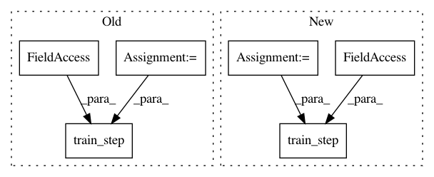

c093d150683ad83f5349717c890aa7f0c3533501,slm_lab/agent/algorithm/sac.py,SoftActorCritic,train,#SoftActorCritic#,93
Before Change
policy_loss = self.calc_policy_loss(batch, pdparams, advs) // from actor
val_loss = self.calc_val_loss(v_preds, v_targets) // from critic
if self.shared: // shared network
loss = policy_loss + val_loss
self.net.train_step(loss, self.optim, self.lr_scheduler, clock=clock, global_net=self.global_net)
else:
self.net.train_step(policy_loss, self.optim, self.lr_scheduler, clock=clock, global_net=self.global_net)
self.critic_net.train_step(val_loss, self.critic_optim, self.critic_lr_scheduler, clock=clock, global_net=self.global_critic_net)
loss = policy_loss + val_loss
After Change
advs, v_targets = self.calc_advs_v_targets(batch, v_preds)
policy_loss = self.calc_policy_loss(batch, pdparams, advs) // from actor
v_targets = self.calc_v_targets(batch)
val_loss = self.calc_val_loss(v_preds, v_targets)
q_loss = self.calc_q_loss(batch)
self.net.train_step(policy_loss, self.optim, self.lr_scheduler, clock=clock, global_net=self.global_net)
self.critic_net.train_step(val_loss, self.critic_optim, self.critic_lr_scheduler, clock=clock, global_net=self.global_critic_net)
self.q1_net.train_step(val_loss, self.q1_optim, self.q1_lr_scheduler, clock=clock, global_net=self.global_q1_net)
self.q2_net.train_step(val_loss, self.q2_optim, self.q2_lr_scheduler, clock=clock, global_net=self.global_q2_net)
loss = policy_loss + val_loss + q_loss
// reset
self.to_train = 0
In pattern: SUPERPATTERN
Frequency: 3
Non-data size: 6
Instances
Project Name: kengz/SLM-Lab
Commit Name: c093d150683ad83f5349717c890aa7f0c3533501
Time: 2019-07-31
Author: kengzwl@gmail.com
File Name: slm_lab/agent/algorithm/sac.py
Class Name: SoftActorCritic
Method Name: train
Project Name: tensorlayer/tensorlayer
Commit Name: a85216a729be99e4abe1f6ec5f81ad646f27d161
Time: 2019-04-18
Author: rundi_wu@pku.edu.cn
File Name: tests/performance_test/vgg/tl2-eager.py
Class Name:
Method Name:
Project Name: tensorlayer/tensorlayer
Commit Name: a85216a729be99e4abe1f6ec5f81ad646f27d161
Time: 2019-04-18
Author: rundi_wu@pku.edu.cn
File Name: tests/performance_test/vgg/tl2-autograph.py
Class Name:
Method Name: